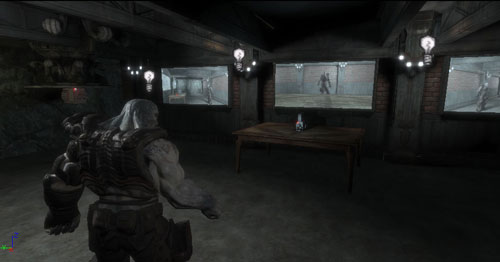

UDN
Search public documentation:
RenderToTextureCH
English Translation
日本語訳
한국어
Interested in the Unreal Engine?
Visit the Unreal Technology site.
Looking for jobs and company info?
Check out the Epic games site.
Questions about support via UDN?
Contact the UDN Staff
日本語訳
한국어
Interested in the Unreal Engine?
Visit the Unreal Technology site.
Looking for jobs and company info?
Check out the Epic games site.
Questions about support via UDN?
Contact the UDN Staff
渲染到贴图
概述
创建渲染目标贴图
 注意有两种类型的 渲染-到-贴图 资源，每种资源由不同的场景捕获类型使用。
注意有两种类型的 渲染-到-贴图 资源，每种资源由不同的场景捕获类型使用。
- RenderToTexture(渲染到贴图) - 用于2d、反射、及入口的场景捕获物。
- RenderToTextureCube（渲染到贴图立方体） - 用于立方体贴图的场景捕获物。
 当您准备把渲染-到-贴图资源应用到表面时，就像正常的静态贴图资源一样，您可以通过使用TextureSampler材质表达式把它放到材质中。
本文档的接下来的部分向您展示了如何真正地把一些东西渲染到 渲染-到-贴图 资源上。
当您准备把渲染-到-贴图资源应用到表面时，就像正常的静态贴图资源一样，您可以通过使用TextureSampler材质表达式把它放到材质中。
本文档的接下来的部分向您展示了如何真正地把一些东西渲染到 渲染-到-贴图 资源上。
HDR 支持
这次仅可以创建RGBA的渲染-到-贴图资源。以后，我们将添加对浮点型HDR目标的支持。渲染场景到贴图
SceneCapture2DActor
通过使用SceneCapture2DActor，您可以像把这个Actor投射到视锥的近平面的表面上那样捕获场景。 当在关卡中放置这些actors中的其中一个时，您将会注意到显示的视锥展示了捕获的场景的视图。Actor的位置及方位用于设置捕获的场景视图的位置及朝向。SceneCapture actor也可以附加到其它actors上，以便您可以使用脚本序列来驱动它或者使用物理来操作它。 注意，这个actor仅是一个SceneCapture2DComponent的容器。关于每种SceneCapture组件类型的详细信息，我们将在本文档的后面进行详细解释。
在任何渲染发生之前，SceneCapture actor必须有一个要渲染到其上面的贴图目标。您可以通过设置它的SceneCapture组件的TextureTarget属性来分配您的 渲染-到-贴图 资源给SceneCapture actor。
注意，这个actor仅是一个SceneCapture2DComponent的容器。关于每种SceneCapture组件类型的详细信息，我们将在本文档的后面进行详细解释。
在任何渲染发生之前，SceneCapture actor必须有一个要渲染到其上面的贴图目标。您可以通过设置它的SceneCapture组件的TextureTarget属性来分配您的 渲染-到-贴图 资源给SceneCapture actor。
SceneCaptureCubeMapActor
SceneCaptureCubeMapActor和SceneCapture2DActor类似，除了它必须以单独的六遍来渲染场景除外 - 每个立方体贴图面渲染一遍。这显然是一个性能消耗昂贵的选择，所以我们推荐使用较低的细节层次设置。 同样，捕获物期望使用一个“RenderToTextureCube”资源作为它的目标贴图。通过使用默认的“RenderToTexture(渲染到贴图)”资源仅能创建一个单独的2D表面，而不能用于立方体贴图的场景截图。创建“RenderToTextureCube(渲染到立方体贴图)”的步骤和创建"RenderToTexture(渲染到贴图)"资源类似。 注意，这个actor仅是一SceneCaptureCubeComponent的容器。关于每种SceneCapture组件类型的详细信息，我们将在本文档的后面进行详细解释。SceneCaptureReflectActor (动态反射)
SceneCaptureReflectActor可以使场景进行动态反射。在关卡中放置一个这种类型的actor来创建一个可以正确地根据镜像表面进行反射及剪辑的场景的视图截图。这个镜像表面是有朝向的，以便它面向的方向和actor的方向一样。actor的放置位置也是很重要的，因为这将改变镜像平面的位置，从而改变场景的剪辑区域。 关于最终获得的反射的一个重要的注意事项是：应该使用设置ScreenAlign为真的ScreenPosition材质表达式和仅使用了红、绿通道的ComponentMask材质表达式来访问那个渲染-到-贴图资源。这样做是必要的，因为反射计算假设贴图像覆盖整个屏幕一样进行映射。以下图片更好地解释了所需的材质节点： 注意，这个actor仅是SceneCaptureCubeComponent的容器。关于每种SceneCapture组件类型的详细信息，我们将在本文档的后面进行详细解释。
注意，这个actor仅是SceneCaptureCubeComponent的容器。关于每种SceneCapture组件类型的详细信息，我们将在本文档的后面进行详细解释。
SceneCapturePortalActor
SceneCapturePortalActor允许从另一个位置的视角处渲染场景，就像它映射到了入口的表面一样。 注意，这个actor仅是SceneCapturePortalComponent容器。关于每种SceneCapture组件类型的详细信息，我们将在本文档的后面进行详细解释。SceneCaptureComponents
这些组件可以捕获场景到贴图目标中。每个组件真正地做了在关卡中放置场景截图探测器的工作，以便可以在渲染整个关卡的主要视图到后置缓冲中之前单独地渲染一遍场景。您也可以把这些组件附加到任何其它类型的actor上。 所有的SceneCaptureComponent类型都有一组可以修改的通用属性。 每个组件都有一个要渲染场景到其上面的目标贴图：- TextureTarget(贴图目标) - 最终的场景截图的渲染-到-贴图资源。注意，场景截图将不会渲染任何东西，除非已经为它分配了目标贴图。
- bEnablePostProcess - 切换应用到场景的后期处理步骤。
- bEnableFog - 切换任何高度雾渲染。
- ClearColor - 贴图目标的背景的清除颜色。
- ViewMode - 枚举了不同的视图和光照配置。可用的模式有：
| 模式 | 描述 |
| SceneCapView_Lit | UE3场景的默认渲染模式，具有动态阴影和光照。 |
| SceneCapView_Unlit | 当渲染场景时没有阴影或光照的渲染。 |
| SceneCapView_LitNoShadows | 和默认的带光照渲染模式一样，但是没有动态阴影。 |
| SceneCapView_Wire | 使用线框模式渲染场景中的所有几何体。 |
- SceneLOD - 设置场景中的几何体的最大细节模式（LOD）。0代表着最高的LOD设置。(目前还没有实现)。
- FrameRate - 设置捕获场景的FPS(每秒的帧数)频率。比如，设置它的值为30将会以30FPS来捕获场景。同时，请注意如果FrameRate的值是0，那么将仅捕获一次场景。当您知道您不需要持续地更新特定的屏幕截图时这是有用的。
- PostProcess - 场景截图使用的后期处理链。您可以指定每个场景截图使用自定义的后期处理过程 (请参照本页面尾部的已知限制)。
SceneCapture2DComponent
这个组件处理渲染场景的2D截图，正如在SceneCapture2DActor部分所描述的。它管理渲染这种类型所必须的状态，并且为了以单独的遍数渲染截图，则需要添加一个FSceneCaptureProbe2D到当前的场景中。 以下是针对这种类型的截图组件的属性：- FieldOfView - 用于计算视图投射的所使用的水平视角。
- NearPlane - 代表近裁平面的和屏幕对齐的视图距离。
- FarPlane - 代表远裁平面的和屏幕对齐的视图距离。将完全地剔除(不渲染)在远裁平面后面的任何几何体。降低FarPlane的值将会导致更好的性能。
- bUpdateMatrices - 如果这个标志设置为假，那么则不能自动地更新视图和投射矩阵，但可以手动地设置它们。这对于比渲染场景需要更多控制的游戏性代码是有用的。
SceneCaptureCubeMapComponent
本组件处理SceneCaptureCubeActor中描述的立方体贴图渲染目标贴图的六遍截图渲染。它管理这种类型渲染所必须的状态，并且为了以单独的遍数渲染截图，需要添加一个FSceneCaptureProbeCube 到当前的场景中。- NearPlane - 代表近裁平面的和屏幕对齐的视图距离。
- FarPlane - 代表远裁平面的和屏幕对齐的视图距离。将完全地剔除(不渲染)在远裁平面后面的任何几何体。降低FarPlane的值将会导致更好的性能。
SceneCaptureReflectComponent (动态反射)
这个组件处理使用镜像平面渲染场景来反转当前视图并剪辑掉该平面后面的所有几何体。它管理这种类型渲染所必须的状态，并添加一个FSceneCaptureProbeReflect 到当前的场景中，以便单独地渲染截图。- ScaleFOV - 不使用。
SceneCaptureParaboloidComponent
目前还不支持。SceneCapturePortalComponent
这个组件就像从在另一个位置的入口处查看场景那样渲染场景。它同时使用了当前入口和目的地入口的朝向来设置截图的朝向。注意，当前的入口和目的地入口应该使用它们自己的唯一的2D的渲染-到-贴图资源。- ViewDestination - 这个入口的在视图位置处的actor。这是捕获场景的位置。
- ScaleFOV - 不使用。
保存静态截图
静态立方体贴图的截图
从动态的渲染-到-贴图资源创建静态贴图的一个非常通用的应用是从您的场景中生成立方体贴图。这里是从您的场景生成立方体贴图的步骤：- 在地图中您想捕获立方体贴图的位置处放置一个SceneCaptureCubeMapActor。
- 在包中创建一个新的RenderToTextureCube(渲染到贴图立方体)资源。这将是场景将要渲染到的动态的 渲染-到-贴图 目标。
- 把第二部中的RenderToTextureCube资源分配给SceneCaptureCubeMapActor的TextureTarget 属性。
- 现在，您的场景被捕获到了动态的 渲染-到-贴图 目标上了。您可以通过右击它并从关联菜单中选择 Create Static Texture(创建静态贴图)... 来保存这个动态贴图的屏幕截图。每次您这样做时，将会创建和动态立方体贴图的6个面相对应的新的静态的立方体贴图。
- 您也可以把您的SceneCaptureCubeMapActor移动到关卡中的另一个位置，并重复步骤4来获得更多的静态截图。
- 一旦您完成了生成静态立方体截图，您便可以删除这些您添加到关卡中的这些临时的SceneCaptureCubeMapActor及随同产生的RenderToTextureCube资源。
示例
